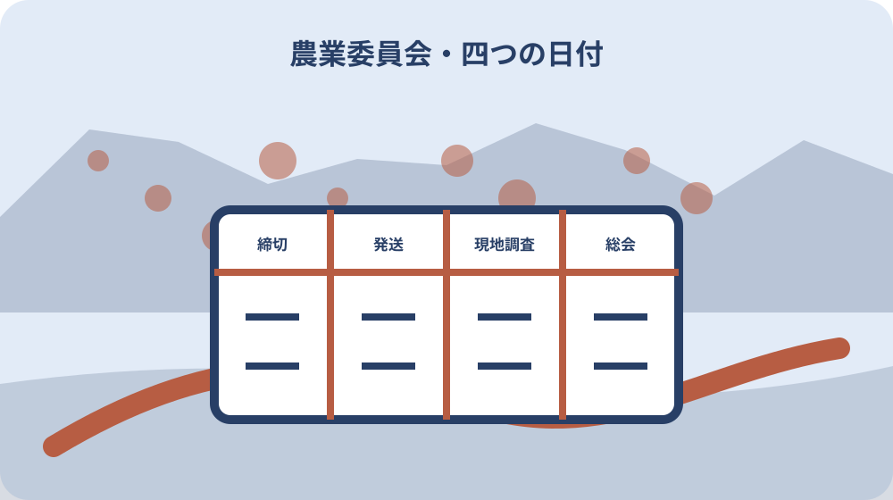

先に結論を確認する
この記事の答え：公式PDFの12か月すべてについて、議案締切、議案発送、現地調査、農業委員会の四列を西暦付きで転記します。予定と実績、PDF取得日、町公式の再確認日も別欄にし、個別申請の受付可否は農業委員会へ確認します。
森町で最初に照合する条件：令和8年度PDFを基準資料とし、表の月名だけでなく四列の日付を西暦付きで転記する。
令和8年度12か月を四列の専用カレンダーにする
この記事の成果物は、森町の令和8年度農業委員会関係開催予定表を12か月すべて転記した専用カレンダーです。個別申請の制度説明を繰り返すのではなく、議案締切、議案発送、現地調査、農業委員会の四日程を月ごとに分け、予定と実績を更新できる形にします。
横軸に四つの日程、縦軸に4月から翌年3月までを置きます。各セルには月日だけでなく西暦を含む年月日を記し、PDFの月名と締切が属する月を取り違えないようにします。右端にはPDF取得日、町公式の再確認日、更新者、変更の有無を加えます。
このカレンダーは許可可否を決める表ではありません。申請種類、必要書類、受付の確定、許可通知は個別案件ごとに森町農業委員会へ確認します。公式予定の見通しと、個別案件の判断を別の層へ分けることが、既存の当事者情報票との役割の違いです。
表の上部には『令和8年度は2026年4月から2027年3月』と書きます。年度名だけだと暦年と取り違えやすいためです。案件名や地番は日程表へ直接書き込まず、別の案件番号で結びます。共通日程の更新と個人情報を含む案件記録を分離します。
12か月表の左端には行番号と対象月を併記します。並べ替え機能のある表計算へ移したときも、4月から翌年3月という公式順を戻せるようにするためです。絞り込み表示を解除した状態のPDF控えも残し、抜けた月がないかを照合します。
議案締切・発送・現地調査・総会を別欄へ写す
公式PDFの見出しは、議案締切、議案発送日、現地調査日、農業委員会です。締切と総会だけを抜き出すと、行政側で資料を送り、現地を確認する中間工程が見えません。四列を省略せず写し、同じ日付欄へまとめないようにします。
議案発送日は申請者が書類を発送する日とは限りません。自分の行動欄には相談、資料完成、提出、補正回答を置き、公式表の四列は行政日程として上段に置きます。誰が行う工程かを分けると、発送日を追加提出期限と誤読しにくくなります。
現地調査と総会も別日です。現地調査済みを審議結果や許可通知と同じ意味にせず、実施を確認できた日だけ実績欄へ記します。日程の名称は言い換えず公式表どおり残し、家族向けの説明は隣の注記欄へ書きます。
四列には番号も付けます。列1を締切、列2を発送、列3を現地調査、列4を総会とし、電話確認でも『列3の8月12日』のように対象を限定します。似た日付を口頭で聞き違えた場合に、どの工程を確認したかを後から追えるようにします。
転記後は列単位と行単位の二回で読み合わせます。最初に締切列を12件、次に発送列を12件と確認し、その後4月行から四つずつ確認します。異なる読み順を使うことで、隣の列へ一日付ずれて入力した誤りを見つけやすくします。
4月・5月は前月締切から年度初めを組み立てる
4月行は、議案締切が2026年3月25日、議案発送が4月8日、現地調査が4月13日、農業委員会が4月16日です。4月の会議に関わる締切が前年度の3月にあるため、4月の月札だけを見て準備開始日を決めません。
5月行は、議案締切が4月27日、議案発送が5月8日、現地調査が5月12日、農業委員会が5月15日です。通常の25日ではなく27日が表に載っています。一般説明から日付を計算せず、年度PDFの実日付を転記します。
年度初めは新旧資料が同じフォルダーに残りやすい時期です。4月行の締切が3月だからといって前年度PDFの3月行を使わず、令和8年度PDFの4月行として資料名を記します。印刷物の右上にも対象年度と取得日を付けます。
4月行と5月行を照合するときは、曜日も原表から写します。3月25日は水曜、4月27日は月曜です。曜日は日付の正しさを再点検する補助に使い、曜日が合わないから日付を自分で直すことはしません。原表と違えば転記誤りか変更かを確認します。
年度初めの案件を翌月へ送る場合は、旧候補行を消さず『4月候補から5月候補へ変更』と案件表へ残します。共通カレンダーの4月行自体は削除しません。案件の都合による変更と、公式日程の変更を別の履歴に保ちます。

6月・7月・8月は休日で動く締切を原表から読む
6月行は5月25日締切、6月8日発送、6月15日現地調査、6月18日総会です。7月行は6月25日締切、7月7日発送、7月13日現地調査、7月16日総会です。二つの行を並べ、締切月と開催月を別欄にします。
8月行は7月27日締切、8月6日発送、8月12日現地調査、8月17日総会です。転用案内は25日が土日の場合に翌営業日と説明していますが、カレンダーでは自分で休日計算をせず、公式PDFに掲載された27日を採用します。
夏季休業や家族の日程は公式表には含まれません。証明書取得や図面準備の社内予定は別の私的予定層へ置き、公式四列のセルを動かしません。準備が間に合わないときは次月候補を確認し、締切後の提出可否を自分で決めません。
6月から8月の三行は、締切から総会までを一本の矢印にせず、四つの点として描きます。日数を数える場合も土日や閉庁日を勝手に営業日へ換算しません。必要な準備期間は町への相談結果から案件表へ置き、年度共通表には公式値だけを残します。
8月行の締切だけを27日へ直した後、翌年も同じ補正をしないよう注記します。27日は令和8年度表に掲載された個別日付です。一般式として保存せず、次年度は新しい原表の各行を読み直します。
9月・10月・11月は月名と締切月を対にする
9月行は8月25日締切、9月8日発送、9月14日現地調査、9月17日総会です。10月行は9月25日締切、10月8日発送、10月13日現地調査、10月16日総会です。月名の一つ前に締切が来る構造を保ちます。
11月行は10月26日締切、11月6日発送、11月13日現地調査、11月18日総会です。26日という表記を毎月25日の記憶で上書きしません。確認表には公式予定と、実際に町が受け付けた日を別列で残します。
三か月分を一枚へ並べると、締切から現地調査までの日数が同じではないことも分かります。ただし日数差から審査難易度を推測しません。日程は準備の見通しに使い、案件内容の判断は地番と計画を示して窓口へ確認します。
秋の三行には、確認日を月ごとに置きます。9月分を8月に確認しても、11月分まで変更なしと保証されたことにはしません。対象月の行を開いた日、PDFを再取得した日、窓口へ変更を尋ねた日を分け、確認対象の範囲を明示します。
11月行は発送が6日、現地調査が13日、総会が18日で、前二行と並びが違います。数字だけをコピーして月をずらすと誤るため、一行ずつ原表から入力します。連続月の予定に規則性があると仮定しないことが版管理の基本です。
12月・1月・2月・3月は年越しを西暦で固定する
12月行は2026年11月25日締切、12月8日発送、12月14日現地調査、12月18日総会です。1月行は2026年12月25日締切、2027年1月7日発送、1月15日現地調査、1月20日総会です。年をまたぐ日付には全て西暦を書きます。
2月行は2027年1月25日締切、2月8日発送、2月12日現地調査、2月17日総会です。3月行は2月25日締切、3月8日発送、3月15日現地調査、3月18日総会です。令和8年度でも後半は2027年になることを表題へ明記します。
年末年始の閉庁日や個別受付を公式表だけから補いません。12月25日の締切へ向けた相談時期や資料提出の可否は農業委員会へ確認します。家族の休暇予定は別層へ書き、行政の予定と混ぜないようにします。
1月行の四つの日付は二つの年に分かれるため、セルごとに年を省略しません。ファイル名にも『R8-01行_締切20261225』のような検索手掛かりを付けます。翌年1月の予定だけを探した人が、締切を2027年12月と誤読しない形にします。
予定列と実績列を分けて開催後に更新する
各日程には予定と実績の二列を作ります。PDFの日付は予定欄へ写し、提出控え、町からの連絡、開催後の確認など根拠があるときだけ実績欄へ日付を入れます。予定日が過ぎただけで実施済みの印を付けません。
変更連絡があった場合は、旧予定、変更後予定、連絡日、連絡方法、確認者を残します。旧日付を削除すると、家族の古い予定表と食い違った理由が分からなくなります。版番号を一つ上げ、変更箇所へ資料番号を付けます。
個別案件の提出実績は、年度共通カレンダーへ案件名を直接詰め込まず、案件番号で結びます。共通表は公式予定の版管理、案件表は受付と補正の実績という役割に分けます。個人情報を含む案件表の共有範囲も別に決めます。
実績の根拠欄には、受付印のある控え、町からの連絡、公式公表など何を見たかを書きます。家族の予定アプリにチェックが付いたことは行政実績の根拠にしません。確認できなかった工程は空白のままにせず『実績未確認』と記します。
PDFの取得日・確認日・版名を一緒に保存する
保存名は『R8農業委員会開催予定表』だけでなく、公式ファイル名、取得日、対象年度を含めます。URLも索引へ記し、印刷物と保存データが同じ原本から作られたか分かるようにします。画面の更新日と自分の取得日は別項目です。
PDFを再取得して同じファイル名だった場合も、内容が同じとは決めません。取得日ごとに保存し、日付表の差を確認します。差がなければ『変更なし確認』、差があれば変更セルと確認先を記録します。
家族共有用に表を作り直すときも、転記元PDFを一緒に残します。自作表だけが回覧されると、数字の誤入力を確かめられません。転記者と照合者を分け、12行48セルを原表と読み合わせた日を署名欄へ入れます。
自作表には元PDFのページ番号、表題、公式URLも記します。印刷した一枚だけが写真で共有されても、元資料へ戻れるためです。ファイルの更新日時は取得日の代用にせず、誰がいつ公式URLから得たかを記録します。
変更の有無を町公式と窓口回答で確かめる
開催予定表は将来の日程を示す資料です。天候、運営上の事情その他で変わる可能性を見込み、行動直前に町公式ページと農業委員会の案内を再確認します。変更可能性があるという一般論だけで新しい日付を推測しません。
窓口へ確認するときは、対象年度、月行、確認したい列、PDF取得日を伝えます。『来月の会議はいつですか』だけでなく、『令和8年度8月行の現地調査日と総会日に変更がありますか』のように質問を限定します。回答日と部署を記録します。
オンライン申請を使う場合でも、送信日が議案締切への掲載確定日とは限りません。農林水産省も提出先がeMAFF対応か確認するよう案内しています。受付状況と開催予定表のどの月へ入るかを森町側へ確認し、送信画面だけで実績を閉じません。
変更確認の回答が口頭なら、質問した行と列、回答日、担当部署、回答内容をその日のうちに記録します。後日公式PDFが差し替わったら、口頭メモを削除せず新PDFと対応させます。二つの情報が違う場合は町へ再照会します。
申請種類の判断はカレンダーから切り離す
耕作目的の売買・貸借、所有者自身の転用、権利移動を伴う転用では手続が異なります。ここでは第3条、第4条、第5条の一般解説を深掘りせず、どの案内ページが開催予定表へつながるかだけを示します。種類の確定は個別相談で行います。
森町の第3条案内は、期日までの提出と毎月の総会審議を説明しています。転用案内は毎月25日の締切と翌月末の許可日を示します。総会日、許可日、受付日を同じ欄にせず、案件表の別項目として管理します。
カレンダーに日付があることは、書類が受理されることや許可されることの保証ではありません。地番、当事者、現況、利用目的を示して必要手続を確認し、公式日程は相談開始の余裕を測る材料として使います。
第3条と転用の資料を同じ案件で見る場合も、手続名を一つにまとめません。町のどの案内ページを確認し、どの締切行へ入ると回答されたかを案件表へ残します。年度カレンダー側には制度解説を書き足さず、参照先だけを置きます。
大石の視点：希望日ではなく確認済み日付を共有する
ここからは公的資料ではなく、私、大石浩之の実務上の提案です。家族会議では『秋までに売りたい』という希望日と、町公式で確認した締切・現地調査・総会を別の色にします。希望を公式予定へ見せないためです。
私は年度共通カレンダーの横に案件番号だけを置き、詳しい名義、地番、契約条件は案件表へ戻します。これなら家族全員が日程の見通しを共有しつつ、許可前の合意や価格相談を行政の処分と混同せずに済みます。
売却未定でも予定表を作る意味はあります。相談に必要な時間幅を知り、農地を当面管理する案や次月へ送る案を比べられるからです。カレンダーは急がせる道具ではなく、未確認の日付を見つける道具として使います。
公的事実はPDFの四列と町公式の案内、私の提案は色分け、案件番号、版管理です。この区別を凡例へ書きます。私の表の締切を行政が定めた新しい期日へ見せず、必ず原表と確認記録へ戻れる構成にします。
年度末に旧版を閉じて次年度表を新しく作る
年度末には令和8年度表を確定版として閉じます。各月について公式予定、確認できた実績、変更履歴、未確認事項を残し、翌年度の日付欄へコピーしません。旧版は削除せず、対象年度を表紙に付けて保管します。
新年度PDFが公開されたら、空白の12か月表へ新しい四列を転記します。前年と同じ曜日や日付でも、前年値を複写せず原表から入力します。転記者と照合者が48セルを確認し、取得日と確認日を新しく記録します。
今日の一歩は、令和8年度PDFを開き、4月から翌年3月までの四列を自分の表へ写すことです。その後、対象案件の希望月だけを案件番号で結び、森町農業委員会へ変更と受付の確認をします。これで既存の当事者情報票と競合せず、日程版管理に専念できます。
年度を閉じる際は、12行すべてに確認状態を入れます。案件がなかった月も『案件なし・公式予定のみ保存』と書き、空欄の意味を明らかにします。次年度表には日付を引き継がず、列構成と確認手順だけを空のひな型として使います。